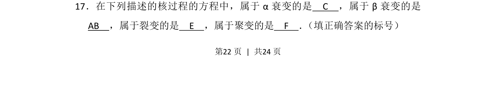
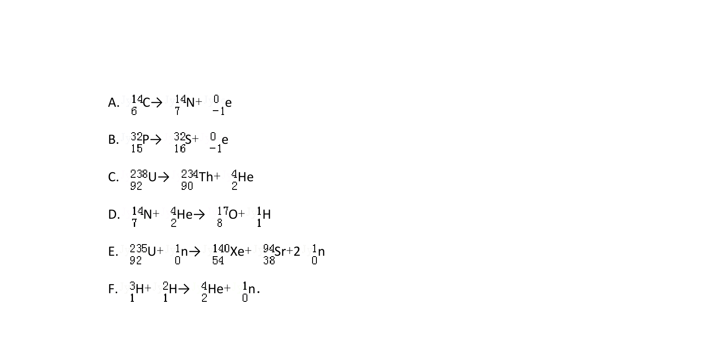
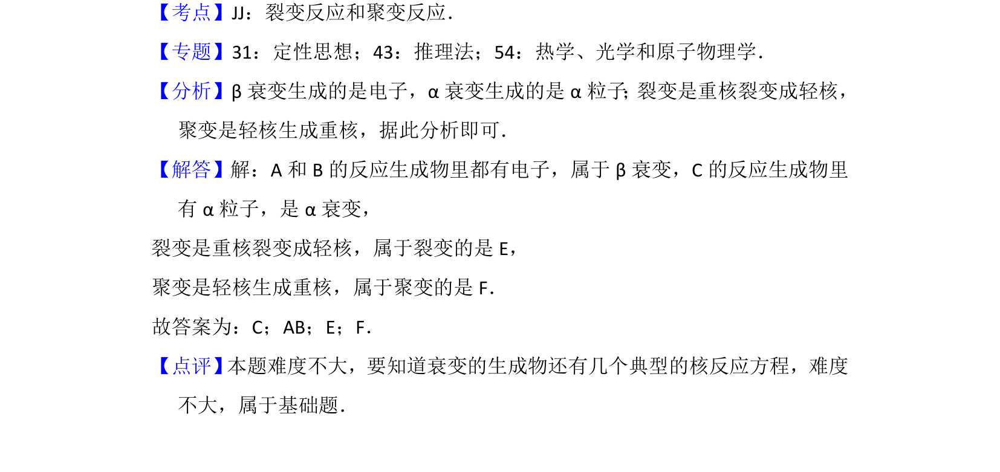

2016-新课标Ⅱ-17
吉林2016卷新课标Ⅱ不分题17题型解答难易
考点：α衰变 β衰变 裂变 聚变
题面


摘要
本题考查核反应类型的辨别。
关联考点
答案与解析

📄 原 PDF 第 22 页：素材/真题/吉林/2008-2024·（吉林）物理高考真题/2016年高考物理试卷（新课标Ⅱ）（解析卷）.pdf
题干文本
17．在下列描述的核过程的方程中，属于α衰变的是 C ，属于β衰变的是
AB ，属于裂变的是 E ，属于聚变的是 F ． （填正确答案的标号）
解析文本